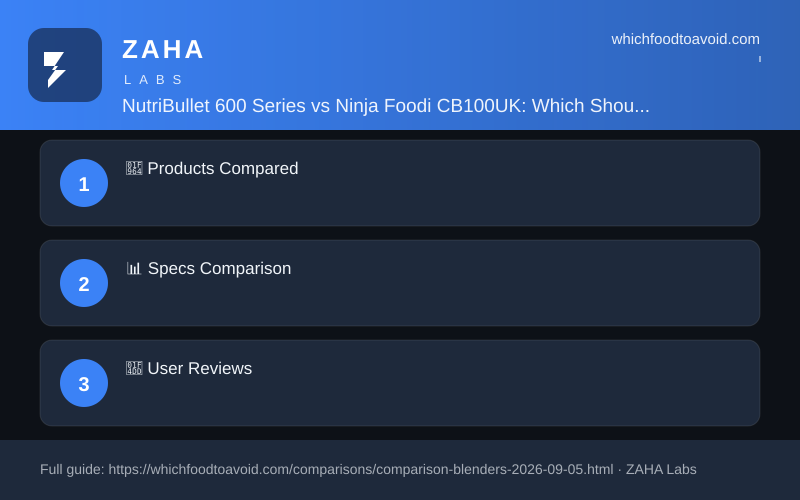

| Feature | NutriBullet 600 Series (Graphite) | Ninja Foodi CB100UK |
|---|---|---|
| Price | $69.99 | $98.00 |
| Rating | 4.7/5 | 4.8/5 |
| Wattage/Power | 600W | 1100W |
| Capacity | 700ml cup + 500ml cup | 700ml cup + 400ml bowl |
| Key Feature 1 | Twist-to-start (no buttons) | Smart Torque — no stalling on thick blends |
| Key Feature 2 | Cyclonic nutrient extraction | Auto-iQ (Blend, Crush, Mix, PowerMix) |
| Warranty | 1 year standard (2 yr direct) | 2 years standard |
Amazon buyers rate the NutriBullet 600 as a reliable, fuss-free daily workhorse — many have owned one for years without fault. The Ninja CB100UK earns praise for its sheer blending muscle and smoothie bowl capability, but its noise level is the single most-cited frustration across hundreds of UK reviews, with several buyers specifically recommending you close the kitchen door before pressing start.
For straightforward daily smoothies, the NutriBullet 600 at $69.99 is the smarter buy — it nails the basics, takes up minimal counter space, and its 4.7-star track record speaks for itself. Spend the extra $28 on the Ninja CB100UK only if you regularly blend frozen ingredients without added liquid, want proper smoothie bowls or thick nut butters from the 400ml bowl, or will actually use the Auto-iQ programs — otherwise you're paying for power you won't use.
NutriBullet 600 best for everyday smoothie drinkers who want a compact, simple, and reliable personal blender at a fair UK price. Ninja Foodi CB100UK best for adventurous home blenders who want ice-crushing power, thick smoothie bowl capability, and structured Auto-iQ blending without stepping up to a full-size countertop machine.
Not reliably. Its 600W motor handles small amounts of crushed ice mixed with liquid, but whole ice cubes can strain the blade and produce uneven results. If iced blends are a daily habit, the 1100W Ninja CB100UK is the far safer choice.
Yes — but only if you'll use the features that justify the gap. If you plan to make smoothie bowls, blend frozen fruit without added liquid, or process nut butters in the 400ml bowl, absolutely. For a simple daily fruit smoothie, the NutriBullet does the same job for less.
Yes. The cups, lids, and blade assemblies on both models are dishwasher safe (top rack recommended), so daily cleanup is quick. Neither requires hand-washing under normal use.